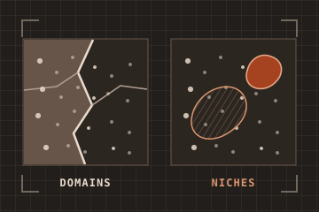

Benchmarking spatial niche identification
Evaluating how spatial domain segmentation methods recover biologically meaningful niches across tissues, platforms, and spatial patterns.

Research question
When do spatial domain segmentation methods identify functional tissue niches, and how do their results depend on cellular composition, anatomy, and measurement platform?
Approach
The study compares 16 representative methods across tissue types, spatial transcriptomics platforms, niche patterns, and computational scenarios. A manually annotated human lymph node dataset provides a high-resolution reference for examining method behaviour.
Current evidence
Accepted for publication in Genome Biology, forthcoming. The study covers 16 spatial transcriptomics methods, spanning probabilistic and statistical approaches, graph neural networks, and deep generative models. A bioRxiv preprint and the benchmarking code are available below.
My contribution
- Contributed to defining spatial niches and the requirements for good niche-detection methods, establishing evaluation criteria.
- Designed evaluation metrics covering accuracy, spatial structure, biological consistency, representation quality, and computational efficiency.
- Contributed to method reproduction and debugging, result analysis, figure preparation, and manuscript writing and revision.